Una fábrica de equipamiento de yoga y fitness en la que confían marcas de todo el mundo.
Fundada en 2013 y con sede en Jinjiang, Fujian, SANFAN es una empresa líder en la fabricación OEM/ODM de esterillas de yoga y productos deportivos, con nuestra planta de producción en Jinjiang, el corazón del cinturón de artículos deportivos de China.
Ofrecemos servicios personalizados de diseño, desarrollo, fabricación y exportación para clientes de todo el mundo. Nuestra gama de productos incluye esterillas de yoga, hamacas de yoga aéreo, ruedas de yoga, rodillos de espuma, bloques, pelotas, bandas de resistencia y una amplia selección de equipamiento deportivo.
Con más de 600 trabajadores cualificados y maquinaria de alta tecnología, garantizamos una producción de gran volumen y alta calidad, así como entregas puntuales a precios competitivos. Nuestro equipo comercial responde en menos de 2 horas en días laborables (lun–sáb, 09:00–22:00 hora de China).
Un fabricante integrado verticalmente en Fujian: I+D, producción y control de calidad bajo un mismo techo.
Todo el proceso se realiza en nuestras instalaciones, desde la espuma hasta el acabado. Contamos con tres plantas propias —dos dedicadas a las esterillas de yoga TPE y una a las esterillas de caucho PU— en las que funcionan 6 máquinas de espumado y 10 líneas de producción. Dado que el proceso de espumado —la etapa más crítica en cuanto a capacidad— se lleva a cabo en nuestras propias fábricas, mantenemos una producción constante de alrededor de 1.000.000 de colchonetas al año y controlamos la calidad desde la materia prima hasta la colchoneta acabada.
| Capacidad de producción | |
|---|---|
| Esterillas de yoga | 1 000 000 unidades al año |
| Bolsas de deporte | 150 000 unidades al mes |
| Ropa de yoga | 120 000 unidades al mes |
| Mallas de yoga | 100 000 unidades al mes |
| Bloques de yoga | 100 000 unidades al mes |

Fotos y clips cortos grabados por nuestro propio equipo en el almacén, en nuestra línea de esterillas de PU y en una feria de 2026. Sin imágenes de stock.
Stock en almacén
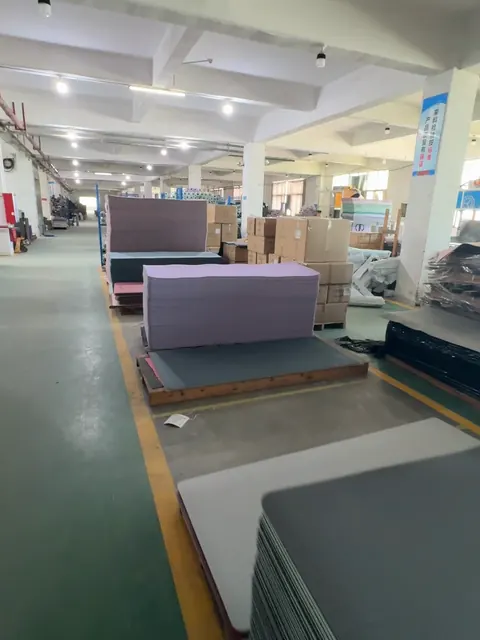
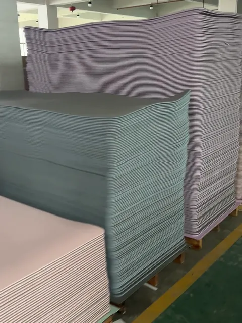
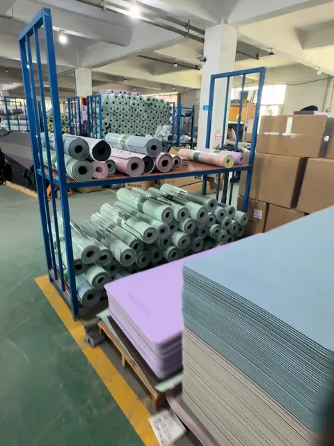
Línea de PU y feria
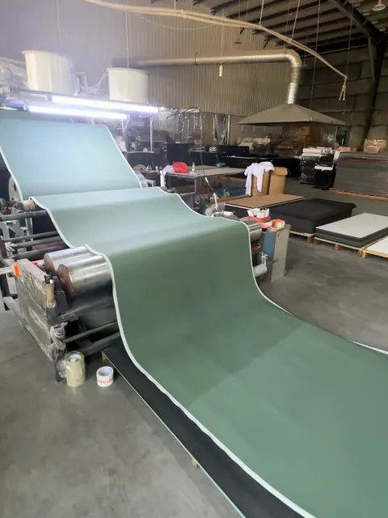
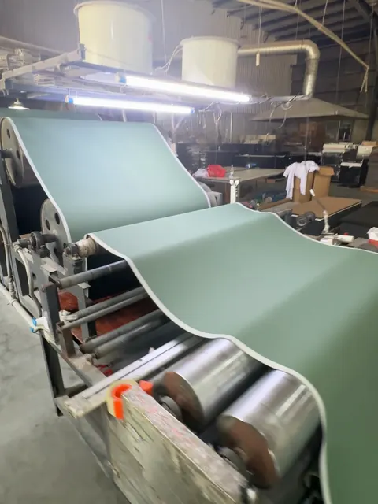
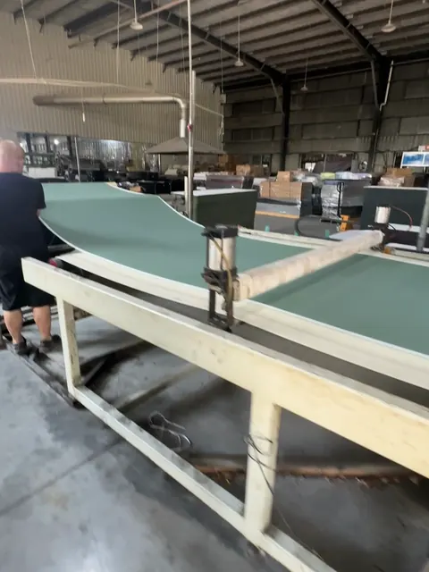
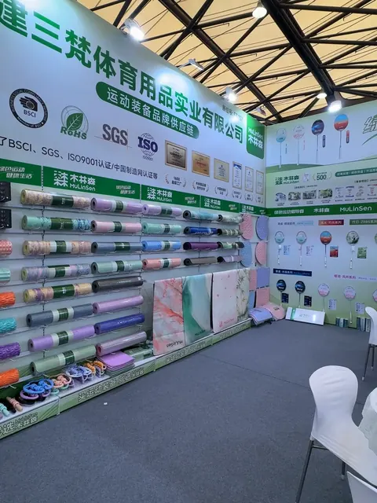
Espumado → Corte → Moldeado → Control de calidad → Embalaje.
Material espumado según las especificaciones
Corte a medida de precisión
Moldeado y acabado
Inspeccionado por lote
Empaquetado para su envío
Seis pasos claros, desde el concepto hasta el producto terminado.
Compartir especificaciones
Cita y obra de arte
Muestra física
Pagar el depósito
Producción en serie
Revisar y enviar
Formulación de materiales y desarrollo de productos
Tamaño, grosor, color y acabado superficial a medida
Impresión de logotipos, relieve y diseño de envases
Control de calidad interno y trazabilidad de los lotes
ISO 9001:2015 · Ensayo RoHS 2.0 · Ensayo Prop 65 · Auditoría amfori BSCI (renovación en curso). Informes completos disponibles bajo petición.

Los documentos que respaldan nuestra lista de certificaciones. Los números de informe y de certificado están ocultos en esta página; los informes completos están disponibles bajo petición.
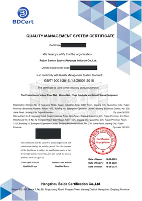
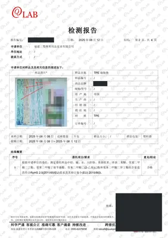
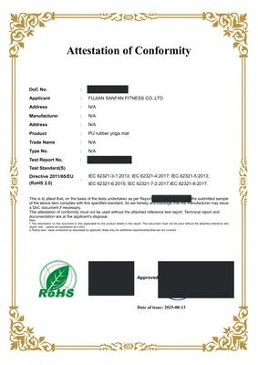
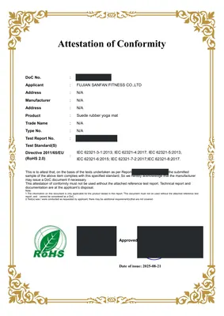
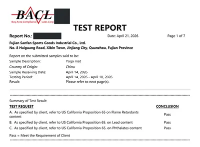
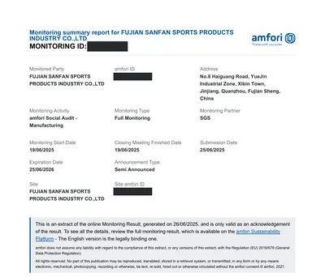
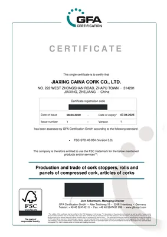
Solicita hoy mismo un presupuesto personalizado y muestras gratuitas.
Ponte en contacto con nuestro equipo